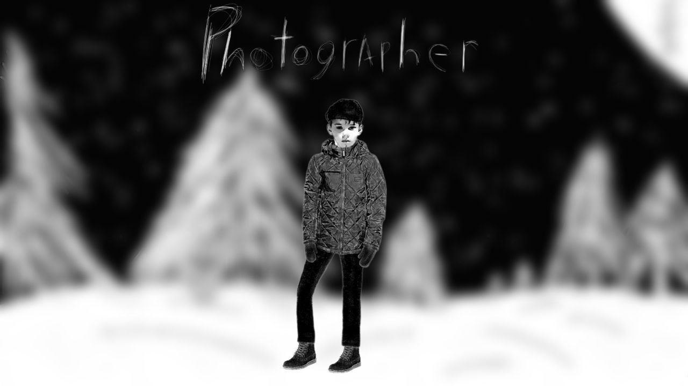
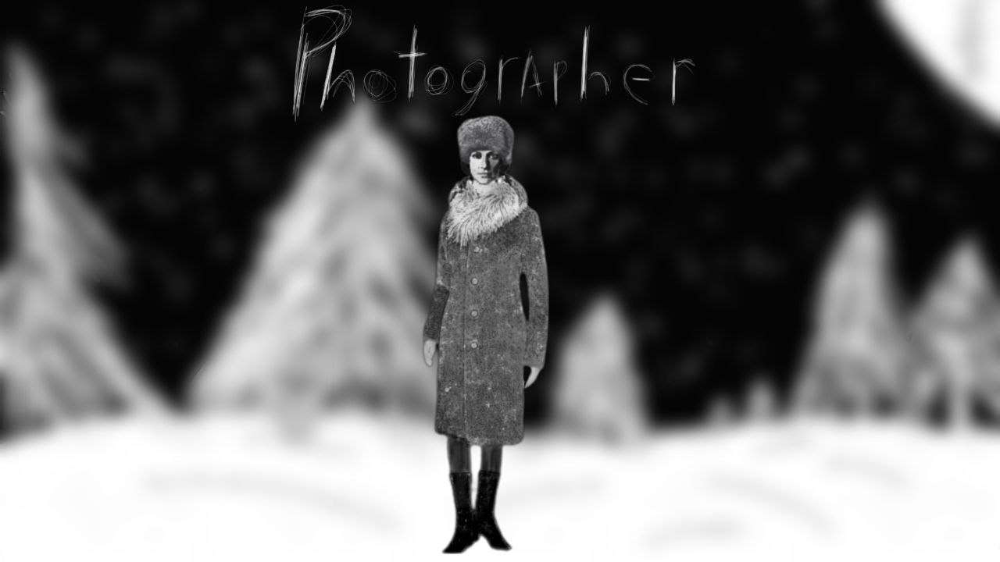
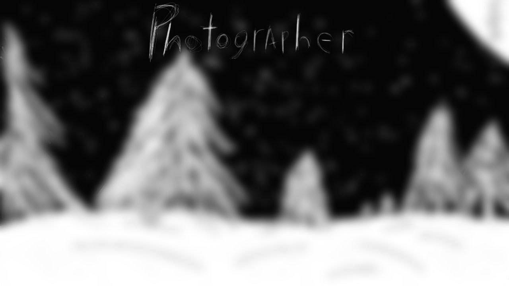
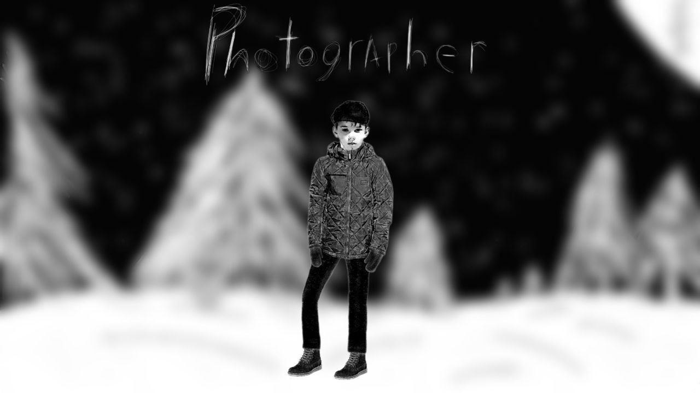
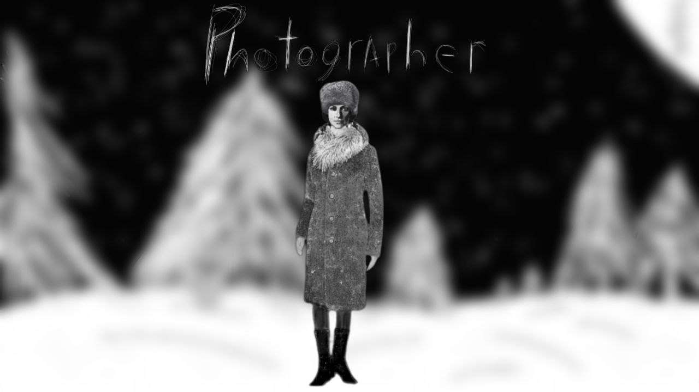
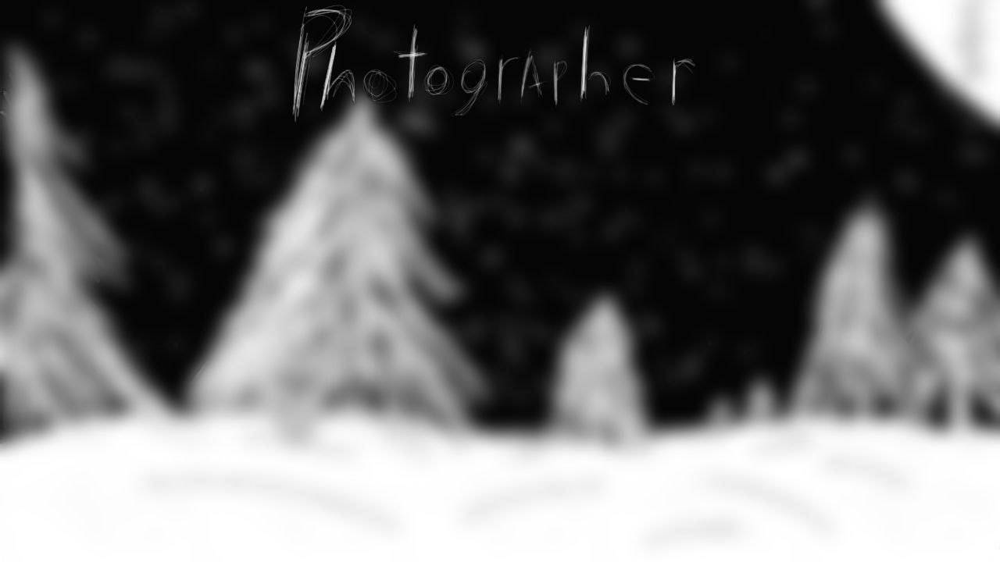

Персонажи :
 





Android : в разработке, КТТС, будующая стоимость : 23 рубля.
IOS : будет в разработке скоро, КТТС, стоимость : не определена.
Windows : будет в разработке скоро, КТТС, стоимость : не определена.
Рубль : 23
Доллар : 0,26
Евро : 0,24
Беларусский рубль : 0,9
Гривны : 9,38
Жэньменби (Юань) : 1,88
Тенге : 119,34
Здесь пока пусто, но скоро здесь будет контент.
Станьте первым кто пришлет фан арт!
Сделайте 1 теорию или миф об игре, и мы опубликуем их сюда!
Saw Games Studio - состоит из четырех человек - это, два разработчика, и два художника. Изначально студия состояла из одного человека, но спустя год ее команда пополнилась. SG создал Главный разработчик "Фотографа", более известный под интернет псевдонимом "Gorshok", примерно в октябре 2022 года
"King of GreatBritain" - который начинает помогать в разработке и в последствии становится вторым разработчиком. Если вы это читаете, то значит что игра все еще развивается ;).
У игры есть два художника :
"God" - занимается созданием локаций для игры, а также отвечает за ее "Внешний Вид" и некоторые СоцСети. Со слов художника - "Я занимаюсь рисованием для игры "Фотограф" так как это доставляет мне удовольствие."
"Revanshist" занимается созданием персонажей новеллы, его работа неоднократно попадала в Youtube канал студии (подписывайтесь).
Главный и второстепенный разработчики выражают художникам особую благодарность.
SawGamesStudio - группа разработчиков и энтузианистов, создающие в данный момент такие игры как :
Photographer
Социальные Сети игры :
TelegramYouTube
Вконтакте
Boosty